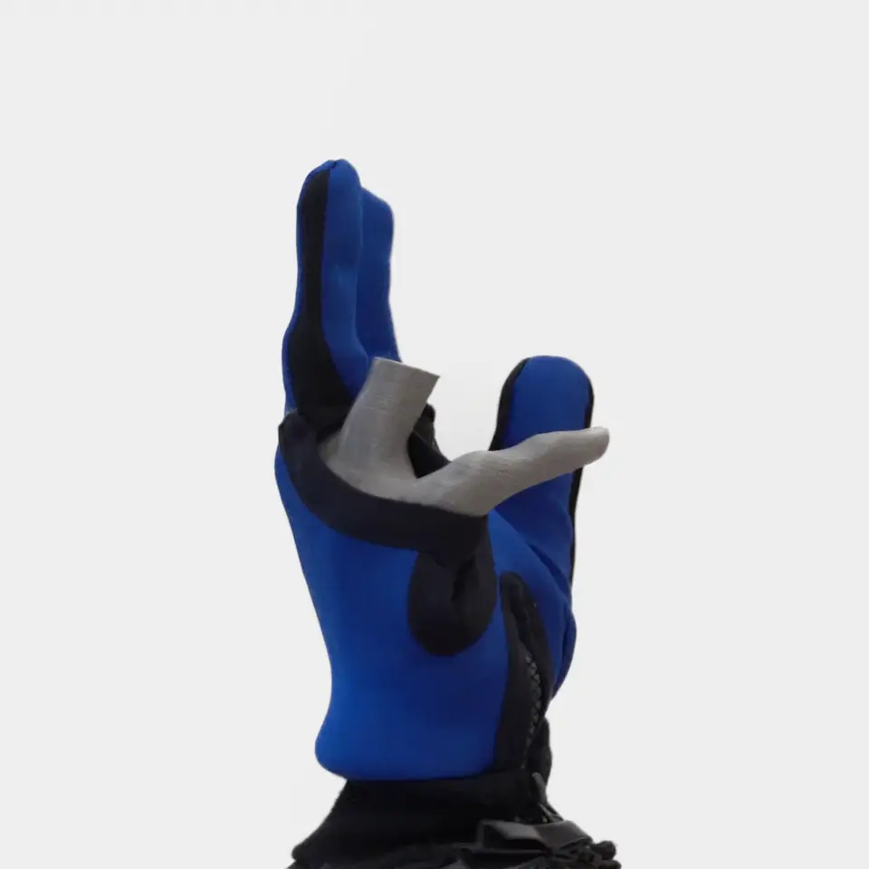
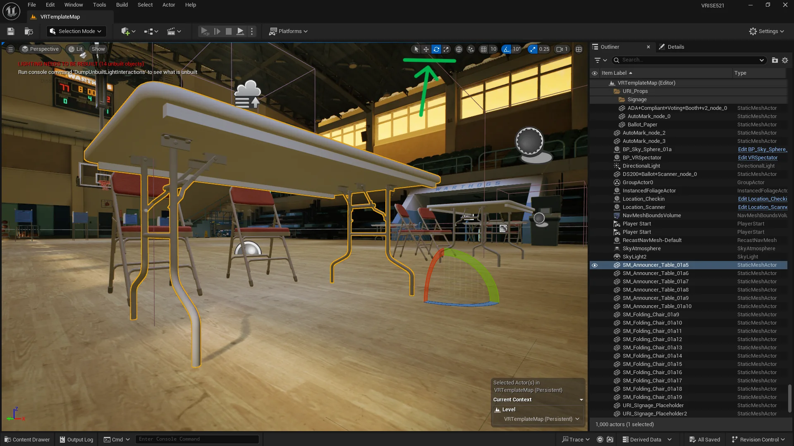

Skip to resume and projects
Research & Design Portfolio
Ph.D. Student
Industrial & Systems Engineering
University of Rhode Island
Shubham
Chomal
Human-Computer Interaction
Healthcare
Medical Technology
E-Textiles
Robotics
Manufacturing
Automation
Ph.D.
Industrial & Systems Engineering
Present
M.S.
Systems Engineering
2026
M.Des.
Industrial Design
2022
B.Tech.
Mechanical Engineering
2020
00
2026
Curriculum Vitae
Resume
: education, research, publications and experience

01
2022
Master’s Thesis · Design
Identifying and designing
user-friendly
mechanisms
in gloves for assessment of Parkinson’s disease
02
2026
Master’s Thesis · Systems Engineering
Design of small-scale flexible manufacturing system pipeline to make
e-textiles customizable

03
2025
Course Project · Human Systems Engineering
Polling station
VR simulation
instructional guide